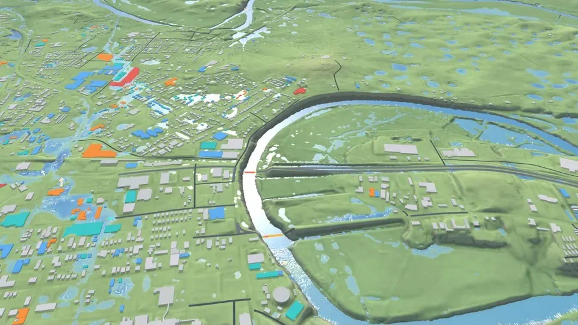

Summary
A county flood model, end to end
From 1 m LiDAR and NOAA rainfall statistics to a 125-million-cell shallow-water simulation, served to two 3-D viewers.
Not validated. Depths are research-model output. They are not for safety, insurance, engineering or emergency decisions. A first comparison with April 2025 road closures shows some skill in where water collects and none yet in how deep.
125 M
cells at 5 m, whole county
12
storm scenarios
≤ 1 cm
tile error vs solver rasters
3,872
LiDAR-mapped closed depressions
- Terrain1 m LiDAR to 5 m grid, UTM 16N
- RainAtlas 14 design storms + 6 gauge replays
- Solverlocal-inertial shallow water on a GPU
- ComputeTACC Vista, one H100 per storm
- TilesCloud-Optimized GeoTIFF, hash-checked
- Viewersweb (MapLibre) and desktop (Vulkan)


Same camera, 12 hours apart. Drag to watch ponds merge and the channel widen. Simulated; not validated.
In motion
Footage
Screens
Current screenshots
Rendered this week from the desktop viewer.
Observed
What actually happened
National Weather Service products for the two historical events I replay.
Gallery
Renders
Click any image to enlarge. All water and depth tiers are simulated, unvalidated model output.


Rendering is part of honesty. Glare used to look like dry patches; the fix keeps depth readable.
Roadmap
Karst & infrastructure integration research plan
Warren County drains through limestone. The solver does not yet model sinkholes, conduits or bridges; this is the plan.
Planned layers
- KyFromAbove LiDAR terrain (UTM 16N, NAVD88)
- 68,389 merged building footprints
- 106 FHWA NBI bridges
- KGS karst and drainage layers
- USGS gauge 03314500 as a calibration benchmark
- delivery as PMTiles + COG in the WebGL viewer